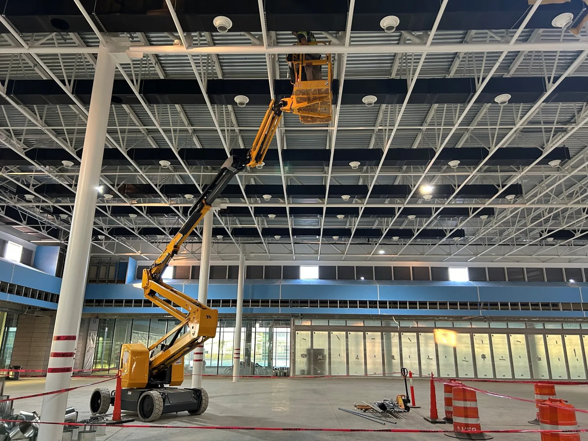
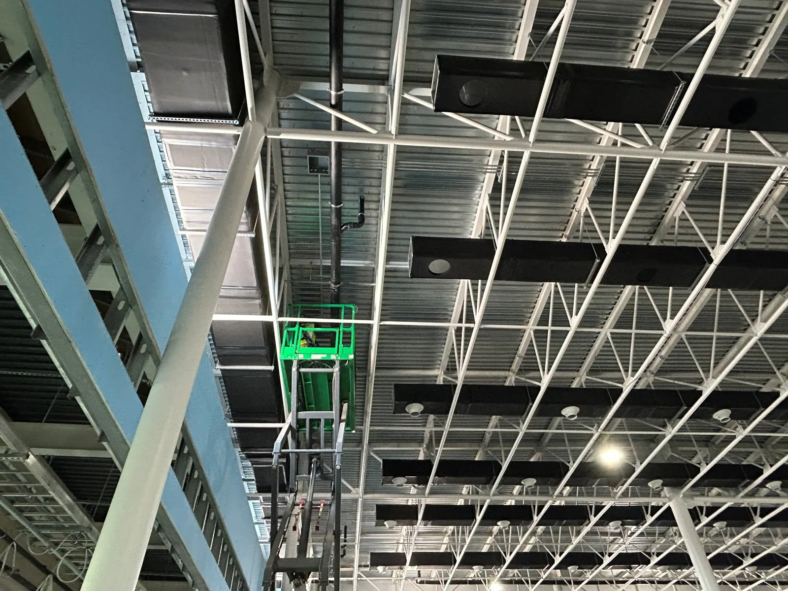

On a Korean-owned plant in Georgia the specification arrives in Korean, the project manager speaks Korean, and the authority having jurisdiction reads English. Most inspection firms can do one side of that. We staff people who do both, and we put them on your site.조지아의 한국계 공장 현장은 스펙이 한국어로 오고, PM이 한국어로 말하고, 검사기관은 영문을 읽습니다. 대부분의 검사 회사는 한쪽만 됩니다. 저희는 양쪽이 되는 사람을 현장에 넣습니다.
Inspection and quality personnel by discipline, embedded in your team and reporting on your format.분야별 검사·품질 인력을 팀에 넣고, 쓰시는 양식으로 보고합니다.

AWS D1.1 · D1.6 structural and stainless, visual and dimensionalAWS D1.1·D1.6 구조·스테인리스, 외관·치수
Placement, sampling, cylinders, and field cure records타설 입회, 시료 채취, 공시체, 현장 양생 기록
Surface prep, DFT, holiday and adhesion testing소지 처리, 건조도막두께, 핀홀·부착력 시험
Piping, supports, pressure test witness and punch배관, 지지대, 압력시험 입회, 펀치
Raceway, terminations, megger and continuity witness레이스웨이, 결선, 절연저항·도통 입회
Panel and ceiling grid, penetrations, pre-certification walk패널·천장 그리드, 관통부, 인증 전 점검
On a Korean-owned plant the drawings, the specification and the project manager are Korean. The general contractor, the authority having jurisdiction and the permanent record are English. Most firms staff one side of that line. What sits on the other side is an interpreter between an inspector and a foreman — and a week of rework when a note is read the wrong way.한국계 공장은 도면도 스펙도 PM도 한국어입니다. GC와 검사기관과 남는 기록은 영문입니다. 대부분의 회사는 이 선의 한쪽만 댑니다. 반대쪽에 앉는 건 검사원과 반장 사이의 통역이고, 메모 한 줄을 잘못 읽으면 일주일이 다시 갑니다.
Korean drawings and specifications without an interpreter in the middle. Nothing is lost on the way in.통역을 거치지 않고 한국어 도면과 스펙을 봅니다. 들어오는 길에 잃는 게 없습니다.
To the Korean project manager and to the American foreman, in the same walk, without waiting for anyone.한국인 PM에게도 미국인 반장에게도, 한 번 도는 동안 누구도 기다리지 않고.
Reports the general contractor and the authority can file as they are. No second pass, no translation note.GC와 검사기관이 그대로 철할 수 있는 보고서. 다시 쓰는 일도, 번역 주석도 없습니다.

An inspector who needs an interpreter is two people on the wall, and only one of them read the drawing.통역이 필요한 검사원은 벽 앞에 선 두 사람이고, 도면을 읽은 건 그중 한 명뿐입니다.
No proposal deck and no discovery phase. You tell us the site and the discipline; we come back with people.제안서도 사전 조사 단계도 없습니다. 현장과 분야만 주시면 사람으로 회신합니다.
Site, discipline, start date, and how many. Thirty minutes is enough.현장, 분야, 시작일, 인원. 30분이면 충분합니다.
Named inspectors with current certificates and expiry dates, plus the insurance certificate — in the format your approval process already uses.이름이 적힌 검사원과 유효한 증명서, 만료일, 보험증서. GC 승인 절차에 쓰는 양식 그대로.
Site orientation and safety training completed before day one, not during it.현장 오리엔테이션과 안전 교육을 첫날 전에 끝냅니다. 첫날에 하는 게 아니라.
Daily, on your format. Weekly summary and an open punch list that does not go stale.쓰시는 양식으로 매일. 주간 요약과, 묵히지 않는 미결 펀치 목록.
Written on site, in your format, the same day. A held item names the clause it failed and what has to happen before it clears — not "see attached".현장에서, 쓰시는 양식으로, 그날 안에 씁니다. 보류 항목에는 어느 조항에 걸렸고 무엇이 되어야 풀리는지 적습니다. "첨부 참조"가 아니라.
B-1 / 07 held. Undercut exceeds AWS D1.1 Table 6.1. Grind and re-test before the next lift. Re-inspection requested for [ DATE ].B-1 / 07 보류. 언더컷이 AWS D1.1 표 6.1 허용치를 넘습니다. 다음 양중 전에 그라인딩 후 재시험. [ 일자 ] 재검사 요청.
Sample layout — the fields are real, the values are placeholders.양식 예시입니다. 항목은 실제이고 값은 자리표시입니다.
Current certificates and expiry dates are provided with every submittal, before mobilization.투입 전 제출 서류에 유효한 증명서와 만료일을 함께 냅니다.
Nobody shortlists an inspection firm on a brochure. They ask whether somebody can be on site Monday, and what arrives with them.회사 소개서 보고 정하는 사람은 없습니다. 월요일에 사람이 올 수 있는지, 올 때 뭘 들고 오는지를 묻습니다.
From your call to a named inspector with certificates attached.연락부터 증명서 붙은 검사원 배정까지.
From accepted submittal to first day on site.제출 서류 승인부터 현장 첫날까지.
General liability and workers compensation limits, certificate on request.배상책임·산재 보험 한도. 요청 시 증명서 발급.
The chasing that usually follows a staffing request happens before mobilization, not after.보통 인력 요청 뒤에 따라오는 서류 독촉이, 투입 전에 끝나 있습니다.
Name the site, the discipline and the start date. We come back with names, certificates and a rate. There is no form.현장, 분야, 시작일만 주시면 사람 이름과 증명서와 단가로 회신합니다. 신청 양식은 없습니다.